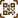

<div class="smart__container">
  <div class="smart-table">
    <table matSort mat-table [dataSource]="dataSource" matSort id="table"  class="table table-hover table-mc-light-blue">
      <!-- mat-table cdk-table -->
      <ng-container *ngFor="let column of columns" [matColumnDef]="column.columnDef">
        <!-- Table Row -->
        <th mat-header-cell *matHeaderCellDef>
          <ng-container *ngIf="column.columnDef !== 'select'">
            {{ column.header}}
          </ng-container>

          <ng-container *ngIf="column.columnDef === 'select'">
            <mat-checkbox 
              (change)="$event ? masterToggle() : null" 
              [checked]="selection.hasValue() && isAllSelected()"
              [indeterminate]="selection.hasValue() && !isAllSelected()" [aria-label]="checkboxLabel()">
            </mat-checkbox>
          </ng-container>
        </th>

        <!-- Table Coloumns -->

        <td mat-cell *matCellDef="let row">
          <ng-container *ngIf="
              column.columnDef !== 'action' &&
              column.columnDef !== 'select' &&
              column.columnDef !== 'notification' &&
              column.columnDef !== 'status' && column.columnDef !== 'niyatQuestion'
            ">{{ column.dataName(row) }}
          </ng-container>

           <ng-container *ngIf="column.columnDef === 'select' ? column.columnDef : ''">
            <!-- row.checkedStatus || selection.isSelected(row) -->
            <mat-checkbox 
            (click)="$event.stopPropagation()" 
            (change)="clickCheck($event, selection, row)" 
            [checked]="checkedStatus(row, selection)" 
            [aria-label]="checkboxLabel(row)">
            </mat-checkbox>
          </ng-container>

          <ng-container  *ngIf="column.columnDef == 'niyatQuestion'">
            <div class="tooltip">{{(column.dataName(row) =='-')?'-':column.dataName(row) |  slice:0:20}}{{(column.dataName(row).length > 20 )?'...':''}}
              <span class="tooltiptext tooltip-top">{{column.dataName(row)}}</span>
            </div>
        </ng-container>

          <!--Start notification Cell-->

        <ng-container  *ngIf="column.columnDef == 'notification'">
          <span [ngClass]="{'read':column.dataName(row) === 'true', 'unread':column.dataName(row) === 'false'}">{{column.dataName(row) === 'true' ?'Read':'Unread'}}</span>
      </ng-container>

     <!--End notification Cell-->


        <!--Start Status Cell-->

        <ng-container  *ngIf="column.columnDef == 'status'">

            <span  class="noPoniterEvent"
            [ngClass]="{
              'pending':column.dataName(row) === 'APPROVAL PENDING' || column.dataName(row) === 'INACTIVE' || column.dataName(row) === 'PENDING',
              'completed':column.dataName(row) === 'COMPLETED',
              'active':column.dataName(row) === 'ACTIVE',
              'Deactivated':column.dataName(row)==='DEACTIVATED',
              'deactivationRequested':column.dataName(row)==='DEACTIVATION REQUESTED'
            }"
          >
            
            {{column.dataName(row) !== 'null' ? (column.dataName(row) | titlecase) : '-'}}</span>

        </ng-container>

       <!--End Status Cell-->


          <ng-container *ngIf="column.columnDef === 'action'">
            <div class="action-cell">
              <button [ngClass]="column.dataClass" mat-icon-button *ngIf="cloneBtn" style="color: red !important;">
                <mat-icon class="material-icons-outlined action_icon" (click)="updateRow(row, 'clone')" [title]="'Clone'">
                  copy_all
                </mat-icon>
              </button>
              <button [ngClass]="column.dataClass" mat-icon-button *ngIf="editBtn" [ngClass]="{'cursor-not-allowed':column.dataName(row) === 'COMPLETED' || column.dataName(row) === 'APPROVAL PENDING'}">
                <mat-icon class="material-icons-outlined action_icon" type="button" (click)="updateRow(row, 'update')" [title]="'Edit'" [ngClass]="{'pointer-events-none':column.dataName(row) === 'COMPLETED' || column.dataName(row) === 'APPROVAL PENDING'}">edit</mat-icon>
              </button>
            <button [ngClass]="column.dataClass" mat-icon-button *ngIf="viewBtn">
              <mat-icon   class="material-icons-outlined action_icon" (click)="updateRow(row, 'view')" [title]="'View'">
                visibility
              </mat-icon>
            </button>
            <button [ngClass]="column.dataClass" *ngIf="hideUserBtn" (click)="updateRow(row, 'hide')" mat-icon-button>
              <mat-icon class="material-icons-outlined action_icon">
                person_off
              </mat-icon>
            </button>
            <button [ngClass]="column.dataClass" mat-icon-button *ngIf="downloadBtn">
              <mat-icon class="material-icons-outlined action_icon" (click)="updateRow(row, 'download')" [title]="'Download'">
                download
              </mat-icon>
            </button>
            <button [ngClass]="column.dataClass" class="delete" mat-icon-button *ngIf="deleteBtn">
              <mat-icon class="material-icons-outlined action_icon" (click)="updateRow(row, 'delete')" [title]="'Delete'">
                delete
              </mat-icon>
            </button>
            <button [ngClass]="column.dataClass" class="delete" *ngIf="statusBtn" mat-icon-button [title]="'Active'">
              <mat-icon   class="material-icons-outlined action_icon" (click)="updateRow(row, 'status')" >
                update
              </mat-icon>
            </button>
            <button [ngClass]="column.dataClass" *ngIf="scan && userRole !== 'Umoor Coordinator'" mat-icon-button (click)="updateRow(row, 'scan')" [title]="'Scan'">
              
            </button>

            <button [ngClass]="column.dataClass" *ngIf="centerFocus" mat-icon-button>
              <mat-icon class="material-icons-outlined action_icon" (click)="updateRow(row, 'centerFocus')">
                filter_center_focus
              </mat-icon>
            </button>

            <button [ngClass]="column.dataClass" *ngIf="centerFocusinfo" mat-icon-button>
              <mat-icon class="material-icons-outlined action_icon" (click)="updateRow(row, 'centerFocusinfo')" [title]="'Info'">
                filter_center_focus
              </mat-icon>
            </button>
             
            <button style="margin-left: 6px;" [ngClass]="[
          column.dataClass || '',
          (row?.isDeactivationRequested && row?.status === '1') ? 'cursor-not-allowed' : 'cursor-pointer'
        ]"
        *ngIf="row?.isAgedOverYear && userRole =='Aamil'"
        mat-icon-button
        (click)="updateRow(row, 'niyatDeactivateBtn')"
        [title]="(row?.isDeactivationRequested && row?.status === '1') 
                   ? 'Deactivation requested' 
                   : 'Deactivate Niyat'"
        [disabled]="row?.isDeactivationRequested && row?.status === '1'">
  
</button>
<button style="margin-left: 6px;" [ngClass]="column.dataClass"
        *ngIf="row?.isDeactivationRequested === true && userRole === 'Super Admin'"
        mat-icon-button
        (click)="updateRow(row, 'confirmNiyatDeactivateBtn')"
        [title]="(row?.isDeactivationRequested && row?.status === '1') 
                   ? 'Deactivation requested' 
                   : 'Deactivated'"
        [disabled]="row?.isDeactivationRequested && row?.status === '0'"
        >
        <!-- <div *ngIf="row?.isDeactivationRequested && row?.status === '0'"> -->
       
       
        <!-- </div> -->
</button>
             
            <button [ngClass]="column.dataClass" mat-icon-button *ngIf="qrCodeScanBtn && userRole !== 'Khidmat Ramadaniyah'">
              <mat-icon *ngIf="row?.qrUrl!==null"  class="material-icons-outlined action_icon plr-10" (click)="updateRow(row, 'qrCodeScanView')" [title]="'View'">
                visibility
              </mat-icon>
              
            </button>
          </div>
          </ng-container>

        </td>
      </ng-container>

      <tr mat-header-row *matHeaderRowDef="displayedColumns" [style.display]="hideHeader"></tr>
      <tr mat-row class="system_reply" *matRowDef="let row; columns: displayedColumns"></tr>

      <tr class="mat-row" *matNoDataRow>
        <td class="mat-cell no-record-found" colspan="12">
          <div class="item">
            <div class="no-faults">
            <span *ngIf="(spinner.visibility | async) == true"></span>
              <span *ngIf="(spinner.visibility | async) == false"> No Data Found </span>
            </div>
          </div>
        </td>
      </tr>

    </table>
  </div>


  <mat-paginator [style.display]="pagination" [ngClass]="{ 'paginator-hide-zero': dataSource.data.length <= 0 }"
    [length]="isServerSide ? totalRecords : (dataSource?.data?.length || 0)"
    [pageIndex]="pageNumber || 0"
    [pageSize]="pageSize || 10"
    [pageSizeOptions]="[5, 10, 20, 30]" [showFirstLastButtons]="false">
  </mat-paginator>
</div>

